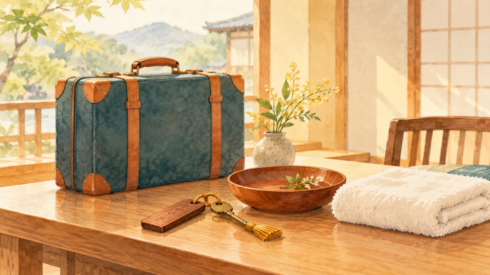

FURUSATO
食べ物以外のふるさと納税。旅行券・日用品・体験・工芸品の返礼品の選び方

本記事にはアフィリエイト広告（PR）が含まれます。紹介した商品を購入されると、当サイトに報酬が入ることがあります。内容は運営者が調べて書いています。
返礼品といえば肉やカニを思い浮かべますが、「冷凍庫に入らない」「食べ切れない」という理由で、食べ物以外を探す人が増えています。この記事では、食べ物以外の返礼品を 4 つのジャンルに分け、それぞれの選び方と注意点を整理します。今週の親記事 ふるさと納税の始め方と返礼品の選び方 のまとめとなる関連記事です。
この記事について
- 返礼品の内容と条件は自治体ごとに違い、変わることがあります。特に旅行券は有効期限と利用条件を申込み前にご確認ください。
- 本記事にはアフィリエイトリンクが含まれます。
4 つのジャンル
| ジャンル | 寄付額の目安 | 向く人 |
|---|---|---|
| 旅行券・宿泊券 | 3〜30 万円 | その地域へ行く予定がある。上限が大きい |
| 日用品 | 1〜3 万円 | 生活費を減らしたい。置き場所がある |
| 体験（食事券・アクティビティ） | 1〜10 万円 | 近隣の自治体に、行ける施設がある |
| 工芸品・日用雑貨 | 1〜5 万円 | 長く使うものを 1 つ選びたい |
旅行券・宿泊券
旅行券は「その自治体内の施設で使える券」です。寄付額の 3 割相当の券が届き、有効期限は 1〜2 年が一般的です。楽天トラベルで使えるクーポン型の返礼品もあり、この場合は楽天トラベルの予約画面で対象施設を選びます。
- 有効期限内に行けるか。繁忙期は対象外の施設もある
- 券の額面を超える分は自己負担。差額の支払い方法を確認する
- 宿泊券は「1 泊 2 名」など人数と食事の条件が決まっている
日用品
トイレットペーパー、ティッシュ、洗剤、タオルなど。支出がそのまま減るジャンルで、選び方は 日用品とお米のふるさと納税 で扱いました。タオルは今治や泉州など産地の返礼品が多く、贈り物にも使えます。
体験
レストランの食事券、温泉の入浴券、果物狩り、工房での体験など。近隣の自治体に対象施設があれば、休日の予定として使えます。予約が必要な体験が多く、有効期限も 6 か月〜1 年と短めなので、申込んだらすぐ予定を決めます。
工芸品・日用雑貨
包丁、鍋、器、木工品、革製品など、その地域の産業と結びついた返礼品です。長く使うものを 1 つ選ぶと、満足度が高くなります。寄付額 1〜3 万円で、市販価格 3,000〜9,000 円相当が目安です。
食べ物以外を選ぶときの共通の注意点
- 券や体験は「使わなかったら無駄」。予定を先に決める
- 寄付額に対する価値は 3 割以内。市販価格を期待しすぎない
- 置き場所と有効期限を、申込み前に確認する
まとめ
- 食べ物以外は、旅行券・日用品・体験・工芸品の 4 ジャンル。
- 旅行券と体験は有効期限と利用条件、日用品と工芸品は置き場所を見る。
- 「使い切れる」ことを最優先に選ぶ。